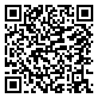

🔵 5ème · Période 5 · Révision
Révision : Séquence 9
Projet de groupe : Les notions clés
🔗 Lien direct vers cette page

59R
Scanne le QR code, ou saisis ce code sur la page d'accès direct du site.
https://lyceefrancaisdetananarive.github.io/technologie/go.html?c=59R
📖 Vocabulaire essentiel
Plie la feuille sur les pointillés pour cacher la colonne de droite, puis interroge-toi.
| Mot | Définition |
|---|---|
| Cahier des charges | Document qui liste toutes les contraintes et fonctions attendues du projet. |
| Planification | Organisation des tâches dans le temps pour mener un projet à bien. |
| Répartition des rôles | Attribution d'une tâche spécifique à chaque membre de l'équipe. |
| Prototype | Premier modèle fonctionnel d'un objet, réalisé pour le tester. |
| Compte-rendu | Document qui résume le travail réalisé, les résultats et les difficultés. |
💡 Ce qu'il faut retenir
Les étapes d'un projet : Cahier des charges → Planification → Réalisation → Tests → Compte-rendu.
- Un bon projet commence par un cahier des charges clair et précis.
- Chaque membre de l'équipe a un rôle défini (chef de projet, secrétaire, technicien…).
- La planification permet de respecter les délais et d'organiser le travail.
- Le prototype est testé, amélioré puis présenté à la classe.
✅ Je vérifie mes connaissances
- Quelles sont les 5 étapes principales d'un projet de groupe ?
- Pourquoi est-il important de rédiger un cahier des charges ?
- Cite 3 rôles possibles dans une équipe de projet.
- À quoi sert le prototype dans un projet ?